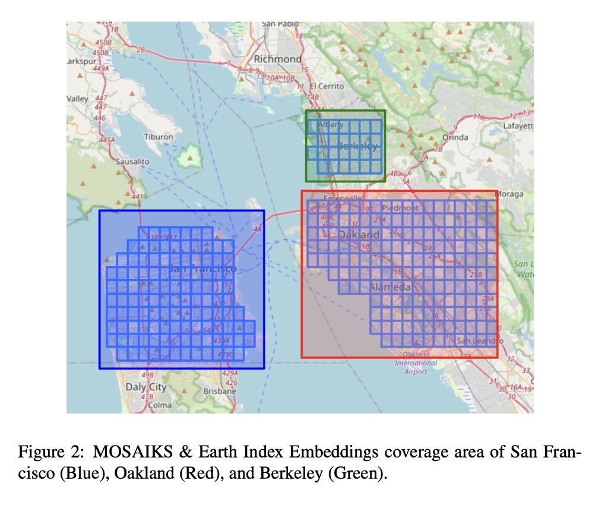

Geospatial Embeddings for Pollution Prediction
How satellite-derived feature vectors and machine learning can predict block-level nitrogen dioxide concentrations across the Bay Area, and what breaks when you try it somewhere new.
During my last year at UC Berkeley, I spent most of my time on a question that felt almost too simple: can you predict how polluted a city block is just by looking at it from space? Not with expensive ground sensors or complex atmospheric models, but with the kind of satellite imagery that's freely available to anyone, compressed into numerical feature vectors and fed to off-the-shelf ML models.
The result was my honors thesis, which won the Melis Medal in 2024. I'm writing it up here partly as an exercise in making research accessible, and partly as a bit of ML archaeology. The models I used (Ridge regression, SVR, Random Forests) were the right tools for the setting: tabular features, a few thousand training samples, and no GPU budget. They worked remarkably well in-distribution.
Today, of course, you'd approach this differently. Foundation models like Clay, Prithvi, or Google's geospatial embeddings can produce richer, pretrained representations of any patch on Earth. You'd fine-tune a vision transformer on Sentinel-2 tiles directly, or use retrieval-augmented embeddings with temporal context. The underlying question, though, stays the same: how much can you learn about a place from how it looks from above?
This page is an interactive walkthrough of the original thesis. No raw data is published; all numbers come from the thesis tables. The full PDF and a recorded talk are both public.
Why nitrogen dioxide?
If you've ever stood at a busy intersection and felt your lungs tighten, you've breathed in nitrogen dioxide. NO₂ is produced wherever fuel combusts: car engines, power plants, industrial furnaces. It's one of six "criteria pollutants" that the EPA regulates because of its direct link to respiratory disease, cardiovascular problems, and premature death.
What makes NO₂ especially interesting as a modeling target is how locally it varies. Particulate matter drifts and disperses; NO₂ tends to spike right at the source and fall off sharply with distance. A census block adjacent to a freeway on-ramp can have concentrations several times higher than a block two streets over. That spatial sharpness means fine-grained predictions are both feasible and useful: you can actually tell a policymaker which blocks are worst, not just which zip codes.
The Bay Area turned out to be the perfect laboratory for this. It has steep pollution gradients driven by traffic (the 101, 880, and 280 corridors), a patchwork of dense urban cores, quiet residential streets, industrial zones, and parkland. Crucially, it also has a one-of-a-kind hyperlocal pollution dataset. Between 2015 and 2017, researchers at UC Berkeley equipped Google Street View cars with air quality sensors and drove them through San Francisco, Oakland, and Berkeley, measuring NO₂ at the block level. That gave me something almost no one else had: a ground-truth target variable at the spatial resolution I actually cared about.
What are embeddings?
Before we get to maps and models, it's worth pausing on the core idea that makes this whole project work: embeddings.
An embedding is a way of representing something complex (an image, a sentence, a location on Earth) as a fixed-length list of numbers (a "vector"). The magic is in how those numbers are chosen. A good embedding arranges things so that objects which are similar in the real world end up close together in vector space, and dissimilar objects end up far apart. The vector doesn't label anything explicitly; the structure emerges from the data.
The most familiar example is probably word embeddings. In models like Word2Vec or GloVe, each word in a language is mapped to a vector of, say, 300 numbers. The training procedure (predicting a word from its neighbors in a large corpus) causes semantically related words to land near each other. "King" ends up close to "queen" and far from "banana," and the directions in the space encode relationships: king − man + woman ≈ queen. Nobody told the model about royalty; it just fell out of the co-occurrence statistics.
From words to places
The same principle can be applied to images of the Earth's surface. Take a satellite image of a 1 km × 1 km tile, pass it through a feature extraction process, and out comes a vector of numbers that encodes what that tile "looks like": its vegetation density, road patterns, building footprints, water features, soil type, and textures that don't even have obvious human names but that correlate with things we care about.
There are different ways to build these extractors. Some use deep neural networks pretrained on millions of labeled images (this is how modern foundation models like Clay or Prithvi work). Others use simpler, more scalable approaches. The thesis uses the latter, partly because in 2023 the foundation model ecosystem for geospatial data was still nascent, and partly because the simpler methods already worked well enough to be interesting.
Embedding space: San Francisco vs. Oakland
When you reduce 390-dimensional Earth Index embeddings to 2-D using t-SNE, census blocks from the same city tend to cluster together, but with significant overlap, because many neighborhoods share similar built environments across city boundaries. Hover over the interactive version below to explore.
Why this matters for pollution prediction
The partial separability tells us the embeddings carry city-level signal: different urban fabrics, vegetation, building density. But the overlap means many blocks look similar across cities. If locations with similar embeddings tend to have similar NO₂ levels, then a model trained on measured locations can generalize to unmeasured ones whose embeddings look similar. The embedding acts as a proxy for the local environment without the model needing explicit knowledge of roads, parks, or traffic.
Two flavors of geospatial embeddings
The thesis uses two embedding sources, each built with a fundamentally different philosophy:
Earth Index (EI) takes a domain-expert approach. The non-profit Earth Genome processed Sentinel-1 (radar) and Sentinel-2 (multispectral) satellite imagery across 12 spectral bands: near-infrared for vegetation health, shortwave infrared for soil moisture, visible bands for built surfaces, and so on. They then computed temporal and spatial summary statistics for each 100 m × 100 m block: means, medians, standard deviations across time. The result is a 390-dimensional vector per location where each dimension has a known physical interpretation (e.g., "mean NDVI in summer" or "radar backscatter variability"). It's the hand-crafted approach: you know what each feature measures.
MOSAIKS takes the opposite philosophy. Following the Rolf et al. (2021) framework, it starts with a set of K small, randomly initialized image patches (think 3×3 or 5×5 pixel grids of random values). Each patch is convolved across the entire satellite tile (like running a filter across a photograph), and the activation at each position is pooled into a single number. With K = 4,000 random patches, you get a 4,000-dimensional vector. The remarkable insight behind MOSAIKS is that these random features, despite having no domain knowledge baked in, collectively capture enough spatial texture to be useful for dozens of downstream prediction tasks: from forest cover to housing prices to, as it turns out, NO₂.
A key question the thesis investigates: do these sources carry complementary information, and does combining them (\(\mathbf{X} \in \mathbb{R}^{4390}\)) outperform either one alone?
The prediction pipeline
With the embeddings in hand, the modeling pipeline is surprisingly straightforward. There's no custom architecture, no GPU training loop, no multi-stage fine-tuning. You take the embedding vectors, concatenate them with the corresponding NO₂ measurements, and run standard scikit-learn models. The heavy lifting was already done by the embedding process.
One subtlety worth explaining: the target variable is log-transformed. Raw NO₂ concentrations are right-skewed. Most blocks have moderate levels, but a few near highways are much higher. Predicting \(\log(Y)\) rather than \(Y\) directly means the model optimizes for multiplicative accuracy ("within 10%") rather than additive accuracy ("within 3 ppb"), which is more meaningful when concentrations span an order of magnitude.
$$\log(Y) = f(\mathbf{X}) + \epsilon$$
The loss function follows naturally: mean squared error on the log scale, which penalizes a 50% overprediction the same whether the true value is 5 ppb or 50 ppb.
$$\text{MSE} = \frac{1}{n}\sum_{i=1}^{n}\bigl(\log(Y_i) - \log(\hat{Y}_i)\bigr)^2$$
Data sources
Three datasets had to come together for this to work, and wrangling their spatial alignment was honestly one of the more time-consuming parts of the project.
The target variable comes from the Google Street View car campaign run by Apte et al. at UC Berkeley. Over 32 months (May 2015 to December 2017), cars fitted with reference-grade NO₂ sensors drove through San Francisco, Oakland, and Berkeley, accumulating enough repeat passes to compute a reliable median NO₂ concentration for 4,137 individual census blocks. This is far finer than anything you'd get from the EPA's sparse network of stationary monitors.
The features come from the two embedding sources described above. The Earth Index data arrived as large GeoJSON files that I converted to shapefiles and manipulated with GeoPandas. The MOSAIKS data was easier: clean CSVs downloaded from the project website. Both datasets were spatially inner-joined to the NO₂ targets, matching each census block to its overlapping embedding tile. Depending on the experiment, the resulting training matrix had 390, 4,000, or 4,390 columns.

Modeling
I tested six model families, chosen deliberately to span a range of inductive biases. The idea wasn't to find the single best model but to understand which kinds of assumptions pay off for this data.
OLS (unregularized linear regression) served as the deliberate baseline: a model with no protection against overfitting. On the 390-dimensional Earth Index data it works tolerably; on the 4,000-dimensional MOSAIKS data it blows up spectacularly, as we'll see.
Ridge and Lasso add regularization. Ridge shrinks all coefficients toward zero (useful when many features contribute small amounts of signal); Lasso drives some to exactly zero (useful for feature selection). In a high-dimensional setting like MOSAIKS, these simple controls are the difference between a working model and numerical catastrophe.
Random Forest takes a completely different approach: it builds hundreds of decision trees, each trained on a random subset of the data and features, then averages their predictions. This lets the model capture nonlinear relationships and feature interactions without any explicit feature engineering. When the combined 4,390-feature set is available, the Random Forest can discover interactions between Earth Index and MOSAIKS features that no linear model could exploit.
SVR (Support Vector Regression) uses the kernel trick to implicitly map features into a higher-dimensional space where linear separation becomes possible. With an RBF kernel, it's particularly good at finding smooth nonlinear boundaries, which turns out to matter for the moderate-dimensional Earth Index features.
MLP (Multi-Layer Perceptron) is a small neural network. I explored architectures with one or two hidden layers of 50 to 100 neurons. It's the most flexible model in the lineup, but also the hardest to tune well with only ~3,300 training samples.
All tuned models used RandomizedSearchCV with 5-fold cross-validation on the 80/20 training split. No separate validation set; the cross-validation folds served that purpose.
Hyperparameter search spaces
- Ridge / Lasso: \(\alpha \sim \text{LogUniform}(10^{-4}, 1)\)
- Random Forest: 100-500 trees, depth 3-10, min samples leaf 1-5, features ∈ {auto, sqrt, log2}
- SVR: \(C \sim \text{LogUniform}(10^{-2}, 10^{2})\), kernel ∈ {linear, rbf}, \(\gamma \sim \text{LogUniform}(10^{-4}, 10^{-1})\)
- MLP: hidden layers ∈ {(50,), (100,), (50,50), (100,50)}, activation ∈ {tanh, relu}, solver ∈ {sgd, adam}
Results
Toggle between the three feature sets below to see every model's train and test MSE. The best test-set performer is highlighted. I'll walk through what the numbers mean, and why the winners won, underneath.
Model performance (thesis-reported)
Select a feature set to see how each model performed.
Why these winners?
Earth Index → SVR. With only 390 hand-engineered features, the relationship between embeddings and NO₂ is moderately complex but not wildly high-dimensional. SVR with an RBF kernel excels here because the kernel trick lets it find smooth nonlinear decision boundaries without explicitly constructing feature interactions. The tuned hyperparameters (C = 13.15, γ = 0.0062) suggest a model that's moderately flexible but not overfitting. The small γ means the kernel is broad, so nearby points in embedding space influence each other, which makes physical sense for spatially correlated pollution.
MOSAIKS → Ridge. This is the most instructive result. With 4,000 features and only ~3,300 training observations, we're in a p > n regime where unregularized OLS is mathematically guaranteed to overfit. And it does, spectacularly. The test MSE explodes to ~1014, meaning the model memorized the training set and produced garbage on new data. Ridge regression (α = 0.025) fixes this entirely by shrinking all 4,000 coefficients toward zero, effectively asking: "what's the simplest linear combination of these random features that predicts pollution?" It's a beautiful demonstration that MOSAIKS features are designed for linear models: the random kitchen sinks theory guarantees that enough random features, combined linearly, can approximate any smooth function.
Combined → Random Forest. When you stack all 4,390 features together, the Random Forest's ability to discover nonlinear interactions becomes decisive. The forest can learn rules like "if MOSAIKS feature #2,387 is high (indicating a road texture) and Earth Index NDVI is low (no vegetation buffer), then NO₂ is elevated." No linear model can express this kind of conditional logic. The test MSE drops to 8.23×10−5, orders of magnitude better than any single-source result, confirming that the two embedding types carry genuinely complementary information.
EI → SVR (C=13.15, γ=0.0062) | MOSAIKS → Ridge (α=0.025) | Combined → Random Forest (406 trees, depth 9)
Interpreting error: log scale → percent
MSE values like "0.0396" are hard to feel in your gut. What does that mean for a real prediction? The thesis works in log space, so the prediction error for a single block is:
$$\text{PE} = \log(Y_{\text{obs}}) - \log(\hat{Y}_{\text{pred}})$$
A PE of 0.001 sounds tiny, and it is. But a PE of 0.1 sounds tiny too, even though it corresponds to a ~10% error in the real-world concentration. The exponential conversion makes this concrete:
$$\text{PE}(\%) = \bigl(e^{\text{PE}} - 1\bigr) \times 100$$
The calculator below lets you feel this relationship. Try clicking the in-sample and out-of-sample presets to see the difference.
Log error ↔ percent error calculator
Drag the slider or click a preset to convert.
In-sample (SF, Oakland, Berkeley), the thesis maps show error axes of ±0.001, or about ±0.1%. Out-of-sample (Palo Alto, Redwood City, Millbrae), the axes widen to ±0.1, or about ±10%. That's a 100× widening on the log scale, translating to a 100× widening in percentage terms.
Generalization & domain shift
Everything I've shown so far is in-distribution: the model was trained on SF, Oakland, and Berkeley, and tested on held-out blocks from those same cities. The real question (and the one that matters for anyone who wants to actually use this) is whether the model works somewhere it's never seen.
I tested this by applying the best publicly-replicable model (Ridge on MOSAIKS, α = 0.025) to three cities 30 to 50 km south of the training region: Palo Alto, Redwood City, and Millbrae. These cities have their own Street View car data, so I could compare predictions against ground truth.
The out-of-sample MSE was 0.1117, about 1.6× worse than the in-distribution test MSE of 0.0678. That might sound acceptable, but the spatial structure of the errors tells a more nuanced story. In Palo Alto, the eastern side consistently overpredicts by ~10%, while a stripe along Middlefield Road underpredicts by a similar amount. The model seems to have learned that tree-dense residential areas correlate with low pollution (which is generally true in the training cities), but Middlefield Road carries more traffic than its leafy satellite signature would suggest. The embeddings encode how a place looks, not how many cars drive through it per hour.
Domain shift: how error bands widen
This is a conceptual illustration, not calibrated data. Drag the slider to see how moving further from the training distribution widens uncertainty.
Policy implications
One of the things I found most compelling about this project was thinking about what a cash-strapped city health department could actually do with predictions like these. Not perfect predictions: predictions with ±10% uncertainty and known failure modes.
The thesis frames this as a social planner's problem. Deploying dense sensor networks is expensive. Satellite embeddings are free. If you can bridge the two with a model that's transparent about its error bounds, three things become possible:
- Cheap coverage extension. You can generate block-level NO₂ estimates for every neighborhood in a metro area, not just the ones near EPA monitors. MOSAIKS features are publicly available for the entire continental US.
- Targeted interventions. Instead of spreading a limited budget evenly, you can direct resources to predicted hotspots: anti-idling enforcement near schools, subsidized air purifiers for high-exposure blocks, re-routing truck traffic away from residential streets.
- Augmenting existing tools. California's CalEnviroScreen already maps environmental justice at the census-tract level. Adding finer-grained, satellite-derived pollution estimates could sharpen that picture by an order of magnitude in spatial resolution.
The critical caveat (and one I tried to be honest about in the thesis) is that out-of-sample predictions require ground-truthing. A cheap strategy: randomly sample a handful of predicted blocks, deploy temporary monitors for a few weeks, and use the results to re-calibrate or reject the model. It's not zero cost, but it's far cheaper than blanketing the region in permanent sensors.
Limitations & next steps
I want to be transparent about where this approach falls short, partly because the limitations are interesting in themselves, and partly because they point to where the most impactful future work lies.
No socioeconomic features. The model sees only what satellites see. It knows nothing about median income, traffic counts, zoning laws, or demographics. Some of these correlate with pollution for structural reasons (low-income neighborhoods are disproportionately near highways), and adding them could improve both accuracy and policy relevance. California's CalEnviroScreen data would be a natural source.
No temporal dimension. The target is a 32-month median: a single static snapshot. Pollution varies by hour of day, day of week, and season. Future work could pair time-varying embeddings with instruments like TROPOMI (7×3.5 km, daily revisit) or TEMPO (4.7×2.1 km, hourly), though both trade spatial resolution for temporal frequency. The dream scenario: mount sensors on autonomous vehicle fleets (Waymo already covers much of the Bay Area) and generate daily block-level ground truth at scale.
Out-of-distribution uncertainty. The 100× widening of error bars outside the training region is the thesis's most sobering finding. The model has no mechanism for saying "I don't know": it always produces a point estimate, even when it's extrapolating into unfamiliar territory. Formal uncertainty quantification (conformal prediction, Bayesian ensembles, or simply tracking ensemble disagreement across random forest trees) would be essential before anyone made policy decisions based on these predictions.
Spatial independence assumption. The model treats each census block as an independent observation. But pollution is spatially autocorrelated: a high-NO₂ block probably has high-NO₂ neighbors. Incorporating spatial structure, whether through graph neural networks, spatial lag features, or stacked ensembles that use neighbors' predictions as inputs, could reduce the local error variability that shows up in the SF prediction maps.
Links
- Thesis PDF: Geospatial Embeddings for Pollution Prediction: NO₂ in the Bay Area
- Talk recording: YouTube
- MOSAIKS project: Rolf et al. (2021), Nature Communications
- Google Street View pollution data: Chambliss et al. (2021)
Thanks for reading!
© Peter Flo